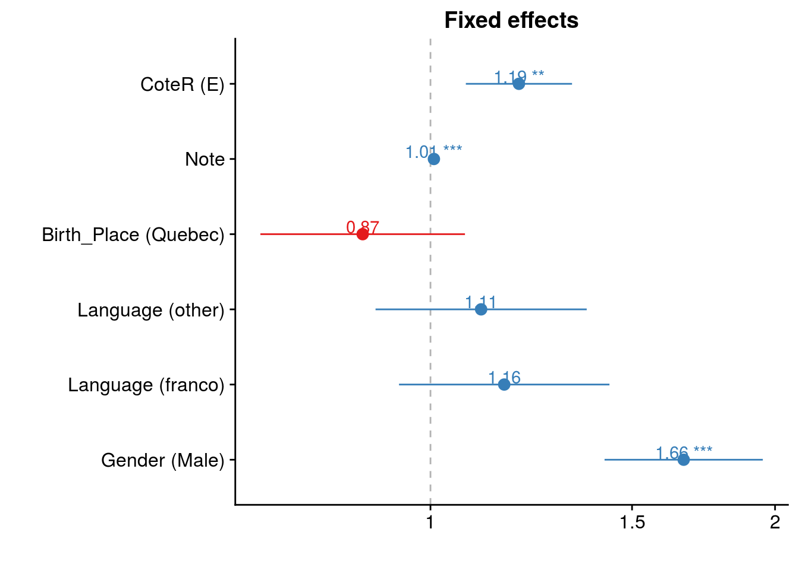

Chapter 5 Methods Centered on Determining Predictive Factors
load("bin/data/labelled_students_Dawson.Rdata")
load("bin/data/course_records_Dawson.Rdata")Under Construction
This chapter will be focused on methods which have a sound probabilistic framework, and allow for inference into the statistical importance of predictive factors.
5.1 Details of the data used
## $Categorical##
## $Continuousquit_next_term ~ .
15 Variables 642068 Observations
15 Variables 642068 Observations
quit_next_term
| n | missing | distinct |
|---|---|---|
| 642068 | 0 | 2 |
Value No Yes Frequency 612834 29234 Proportion 0.954 0.046
student_number
| n | missing | distinct |
|---|---|---|
| 642068 | 0 | 25931 |
| lowest : | 00001B70E66F950D0F06F7F6F6F63411FF966DE0274EE37469A108A0AAD817C0 | 000100B35C3450D606327FBF0CD6DF1DBE651E55246A7B05763B7553EEADF0F6 | 00020938792AE1411E407C5BD7665B96F37A32248F58646657963F375D887666 | 0007E6AFA1CD700997510D26B72479B397EC4E897C33C788A2E283D6374A75B1 | 000FD1F57F60D2CBCC8B526CC43E6EE0A8FD1BC92498681DD19E03555310C9EF |
| highest: | FFF4A2FD0DD4ED282EA3382ABD6069F21C6905DCC2A609D9FB36C2AFDDEB1D14 | FFF644DC0DE9E07F7A51F33CE8EEB8D7E3B3713F4F422854D214601787449AA9 | FFF65E6BC9D881DF6103052367831319201D65CF7ECFBEF1877514D56BF84C18 | FFF998E5F20621E4B1C496D60B27CBD26392F6C3CFEDB365D0AE7A0825F94267 | FFFFFEF94D3B3A22BB9265E006CFFFAF4EB827DA2B5C213358AF05D295D737B4 |
quit.next.term
| n | missing | distinct | Info | Sum | Mean | Gmd |
|---|---|---|---|---|---|---|
| 642068 | 0 | 2 | 0.13 | 29234 | 0.04553 | 0.08692 |
result

| n | missing | distinct |
|---|---|---|
| 520256 | 121812 | 3 |
Value Passing At risk Failing Frequency 447938 41809 30509 Proportion 0.861 0.080 0.059
Note
![image](data:image/png;base64,
iVBORw0KGgoAAAANSUhEUgAAAJcAAAANCAMAAACTvAxuAAAB11BMVEUAAAABAQECAgIDAwMEBAQFBQUGBgYHBwcICAgJCQkKCgoLCwsMDAwNDQ0ODg4PDw8QEBARERESEhITExMUFBQVFRUWFhYXFxcYGBgZGRkaGhobGxscHBwdHR0eHh4fHx8gICAhISEiIiIjIyMkJCQlJSUmJiYnJycoKCgqKiorKystLS0uLi4vLy8wMDAxMTEyMjIzMzM0NDQ1NTU2NjY3Nzc4ODg5OTk6Ojo7Ozs8PDw9PT0+Pj5AQEBCQkJDQ0NERERFRUVHR0dISEhKSkpLS0tMTExNTU1OTk5QUFBRUVFSUlJTU1NXV1dYWFhZWVlbW1tfX19gYGBhYWFjY2NoaGhqampwcHBxcXF3d3d6enp8fHyDg4OFhYWKioqLi4uMjIyPj4+QkJCSkpKampqdnZ2enp6hoaGjo6OkpKSlpaWpqamqqqqrq6uurq6wsLCxsbGzs7O0tLS2tra5ubm+vr6/v7/ExMTGxsbHx8fIyMjJycnMzMzOzs7Q0NDR0dHS0tLT09PY2NjZ2dna2trb29vc3Nzd3d3f39/i4uLn5+fp6enq6urr6+vt7e3v7+/w8PDz8/P09PT19fX29vb39/f4+Pj5+fn6+vr7+/v9/f3+/v7///9I2WsIAAACAElEQVQ4jc3V2V8SURQH8B/GsBQMUwpOqOiIgcgAswhIUMYS7Vm077vZYlamFuVWZJBlZQiI88fGSA9TfSx7mOg83DP3c8+d8/2cl4uPaoUts/FZLj37h9uQ1Ar6zMZnWYyv5xvv1tPj6V8qGuZaHn05dQ2nrzzLFyRn5r9wzZSziA6CDgP9NPh9EnOy0a7Zo2+mbzYNZ9HrQ3Ow5mqFNyoxxx81yjU3LK/vb6E5SuDyiNLF844g+u795MqpFdYh5e4UOXf7gsPjh9Gvha8D3b3Y7gPYFrh60MoCEdcPt//JvNY+SOdJfagHTg7bQgREh3JeHrT1A0GKvDuvmJfarucT41fP6SfPmhH4vcsCXhypKF0P8qq4Mk8nJu8c2u1Fhwj9wCZcAReuv1C4DJdUcYU1TWGb3LZdhCa0OVd3PF0q5r+7dBeV/6uW67lUT8X6V6m6Ku+WKtJKtVKurJbLayulpddfl78sLn56W/hceJV7Yh6bGR2buu9+uFCUXXLbv3UxPMQjlOyqvUW61CB7Yr8jeZgJDrk70ywdT1DcQcp6wGtO7dUKKVN7mjHGQ8aBpMWe2GlK+PSRmMGTtFB77Nowp3FFtphjVg1faxsAKRIQnETqWMzKA1wLPG7YA9AIJrAMulhsFQj427CrDzvkAptcQHMAT8LrRCcLg6Crmb4BAkeUSTdplbgAAAAASUVORK5CYII=)
| n | missing | distinct | Info | Mean | Gmd | .05 | .10 | .25 | .50 | .75 | .90 | .95 |
|---|---|---|---|---|---|---|---|---|---|---|---|---|
| 590863 | 51205 | 101 | 0.999 | 76.05 | 17.3 | 41 | 60 | 70 | 80 | 87 | 92 | 95 |
MoyenneGroupeEvaluation
![image](data:image/png;base64,
iVBORw0KGgoAAAANSUhEUgAAAJcAAAANCAMAAACTvAxuAAABnlBMVEUAAAABAQEEBAQFBQUHBwcICAgJCQkKCgoLCwsMDAwNDQ0RERESEhITExMUFBQVFRUWFhYXFxcYGBgZGRkaGhobGxscHBweHh4fHx8gICAhISEiIiIjIyMkJCQlJSUmJiYnJycoKCgqKiorKyssLCwtLS0uLi4vLy8wMDAxMTEyMjIzMzM0NDQ1NTU2NjY3Nzc4ODg5OTk7Ozs9PT0/Pz9AQEBBQUFCQkJDQ0NERERFRUVISEhJSUlKSkpLS0tMTExNTU1PT09QUFBSUlJUVFRVVVVYWFhaWlpcXFxeXl5fX19gYGBhYWFiYmJlZWVpaWlqampra2tsbGxwcHBzc3N0dHR1dXV5eXl6enp8fHx+fn5/f3+BgYGIiIiKioqOjo6RkZGSkpKYmJiZmZmampqcnJyenp6fn5+hoaGoqKipqamtra2vr6+xsbG1tbW5ubm6urq7u7vCwsLHx8fJycnKysrOzs7Pz8/R0dHU1NTV1dXY2NjZ2dna2trh4eHl5eXr6+vs7Oz09PT19fX39/f5+fn7+/v8/Pz+/v7///8hKjxbAAABZElEQVQ4jc3V6TNCURgG8CfZoqylLMm9aS+VLYpS9hARkT3KvmUNcZHKfy0aNRnVtzPeL+fOmefc+c3z5QVDdB43ObpiTKwWDOKD6ARRbmBDJ3lIFAiSdMVPB/tTLhEW9vJnSbpCEKtTLiGoLsdLvs6IuRI7fjdaMi4FJL7/4HqCWpzt4lmMuRtDhMjcB0ZAiyCUolRZBFk9milUKqAJhnM8INQXv68Cqt996YFeVa6+CKDez9pZhr9dHXzT7RtZ13H4+3iNTOlNyOmqhWHAHyPnil3zZ5NH4tCuRYMun0smxfoVEVc8enGyhurxbZnTCDldyEVDYKZ955fRLFdyFzmPnh2h9GYKzNluMnvqzhZJf69sMa4Dhtn1/FzszzMbi1a3d3jM67Quubun3T1mV6fQQoOSgqcF1FWg28BXgaXlQN6ERjnKtGwoBWiVgqtJBmq+AnVqQMctsVupGc/Q5PJo8tefL71vUrika5sAAAAASUVORK5CYII=)
| n | missing | distinct | Info | Mean | Gmd | .05 | .10 | .25 | .50 | .75 | .90 | .95 |
|---|---|---|---|---|---|---|---|---|---|---|---|---|
| 590646 | 51422 | 68 | 0.998 | 76.66 | 8.025 | 64 | 68 | 72 | 77 | 82 | 86 | 88 |
section

| n | missing | distinct | Info | Mean | Gmd | .05 | .10 | .25 | .50 | .75 | .90 | .95 |
|---|---|---|---|---|---|---|---|---|---|---|---|---|
| 642068 | 0 | 132 | 0.981 | 479.6 | 925.9 | 1 | 1 | 2 | 5 | 20 | 44 | 62 |
Value 0 800 3000 14000 16000 18000 19000 20000 Frequency 623827 1 2134 1495 706 2823 11079 3 Proportion 0.972 0.000 0.003 0.002 0.001 0.004 0.017 0.000
CoteR
| n | missing | distinct |
|---|---|---|
| 642068 | 0 | 2 |
Value D E Frequency 628597 13471 Proportion 0.979 0.021
course.dept
![image](data:image/png;base64,
iVBORw0KGgoAAAANSUhEUgAAAJcAAAANCAMAAACTvAxuAAABYlBMVEUAAAABAQEDAwMEBAQFBQUGBgYHBwcJCQkKCgoLCwsMDAwODg4PDw8QEBASEhIVFRUWFhYXFxcYGBgaGhobGxscHBwdHR0fHx8gICAjIyMkJCQnJycoKCgpKSkqKiorKysvLy8xMTEzMzM0NDQ1NTU5OTk7Ozs8PDw9PT0/Pz9AQEBCQkJDQ0NERERFRUVGRkZLS0tMTExOTk5RUVFSUlJUVFRWVlZXV1daWlpdXV1fX19iYmJkZGRlZWVmZmZoaGhsbGxubm5wcHB4eHh5eXl6enp7e3t/f3+AgICEhISFhYWHh4eKioqLi4uNjY2RkZGVlZWWlpaYmJikpKSlpaWmpqanp6eqqqqrq6utra2zs7O1tbW2tra5ubm/v7/FxcXLy8vQ0NDV1dXX19fa2trd3d3f39/h4eHr6+vu7u7v7+/w8PDx8fH09PT19fX29vb4+Pj5+fn6+vr9/f3+/v7///9b7kjVAAABVElEQVQ4jc2VV1MCQRCEG7lTMQFGzGLGACbEBMgJCBgwB1QMIKwJVNz/756h5KrOYosDy37oh62u3m/mZUDKIFHSXAFaBlX6NVd8cKVvNPcoVCqu+QGeaGiQt7RUXLN9PFFPE2/pP+XK6aWieb6FJJO9K8khl4knxRTHOGfyd6ntK0VUR/DUbBYcMz13R+ktprXvS4XLuqTOJRT+Loar8nF1u5SZ4AGlb7azT65EhNnzn3B5R5RcDVXKTPsipS+IeISp/QzdgHS9U70bVSTuc9TnKxXXseOLS+yUuS6XX5lnw49UBL3YoqmFhx+u+B5CTsGGw4QV4ko9ZnR5RU9Rw4R9dIxmU9tuBGWulowGroAoc8nnrKOXuRVh5uc4IQIaXc1kHauErLnZm8XpmLTArNMPwWgyAY5a9CDvlp1CZ0b/MPHXGYxotbXFgIqjoi9jwC4yfwe8zywIembnZgAAAABJRU5ErkJggg==)
| n | missing | distinct |
|---|---|---|
| 642068 | 0 | 59 |
prog

| n | missing | distinct |
|---|---|---|
| 623629 | 18439 | 29 |
| lowest : | 140B0 | 142A0 | 142C0 | 144A0 | 180A0 |
| highest: | 570E0 | 570F0 | 574B0 | 700B0 | transition |
current-out

| n | missing | distinct |
|---|---|---|
| 147681 | 494387 | 3 |
Value current grad out Frequency 46989 64019 36673 Proportion 0.318 0.433 0.248
status

| n | missing | distinct |
|---|---|---|
| 642068 | 0 | 3 |
Value current grad out Frequency 172382 348118 121568 Proportion 0.268 0.542 0.189
Gender
| n | missing | distinct |
|---|---|---|
| 642068 | 0 | 2 |
Value Female Male Frequency 388205 253863 Proportion 0.605 0.395
Language

| n | missing | distinct |
|---|---|---|
| 642068 | 0 | 3 |
Value anglo franco other Frequency 365605 116104 160359 Proportion 0.569 0.181 0.250
Birth_Place
| n | missing | distinct |
|---|---|---|
| 642068 | 0 | 2 |
Value Other Quebec Frequency 157397 484671 Proportion 0.245 0.755
5.2 Complete Case Analysis
DT_use_in_model <- DT[,list(student_number, quit.next.term, Note, quit_next_term,
CoteR, prog, Gender, Language, Birth_Place)]
cc_ind <- complete.cases(DT_use_in_model)
DT_cc <- DT_use_in_model[cc_ind]There were a total of 642068 observations from 25931 students. Among these, there were 574804 observation with complete data (no missingness) for the variables quit.next.term, Note, CoteR, prog, Gender, Language and Birth_Place, from 25077 students.
5.3 Logistic Regression
5.3.1 Binomial Family
fit <- glm(quit_next_term ~ Gender + Language + Birth_Place + Note + CoteR, data = DT_cc, family = "binomial")sjPlot::sjp.glm(fit)## Waiting for profiling to be done...sjPlot::sjt.glm(fit)| quit_next_term | ||||
| Odds Ratio | CI | p | ||
| (Intercept) | 0.35 | 0.34 – 0.37 | <.001 | |
| Gender (Male) | 1.29 | 1.26 – 1.32 | <.001 | |
| Language | ||||
| franco | 1.10 | 1.07 – 1.14 | <.001 | |
| other | 0.87 | 0.84 – 0.89 | <.001 | |
| Birth_Place (Quebec) | 0.79 | 0.77 – 0.81 | <.001 | |
| Note | 0.97 | 0.97 – 0.98 | <.001 | |
| CoteR (E) | 0.92 | 0.85 – 1.00 | .054 | |
| Observations | 574804 | |||
5.4 Mixed Effects Models

| quit_next_term | ||||
| Odds Ratio | CI | p | ||
| Fixed Parts | ||||
| (Intercept) | 0.00 | 0.00 – 0.00 | <.001 | |
| Gender (Male) | 1.66 | 1.42 – 1.95 | <.001 | |
| Language (franco) | 1.16 | 0.94 – 1.43 | .169 | |
| Language (other) | 1.11 | 0.90 – 1.37 | .347 | |
| Birth_Place (Quebec) | 0.87 | 0.71 – 1.07 | .194 | |
| Note | 1.01 | 1.01 – 1.01 | <.001 | |
| CoteR (E) | 1.19 | 1.07 – 1.33 | .001 | |
| Random Parts | ||||
| τ00, student_number | 60.140 | |||
| Nstudent_number | 25077 | |||
| ICCstudent_number | 0.948 | |||
| Observations | 574804 | |||
| Deviance | 107474.567 | |||